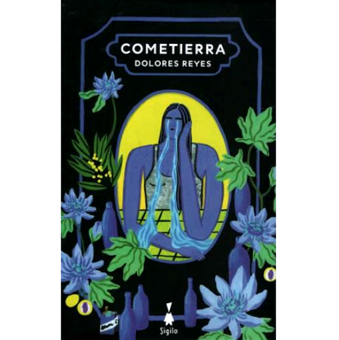
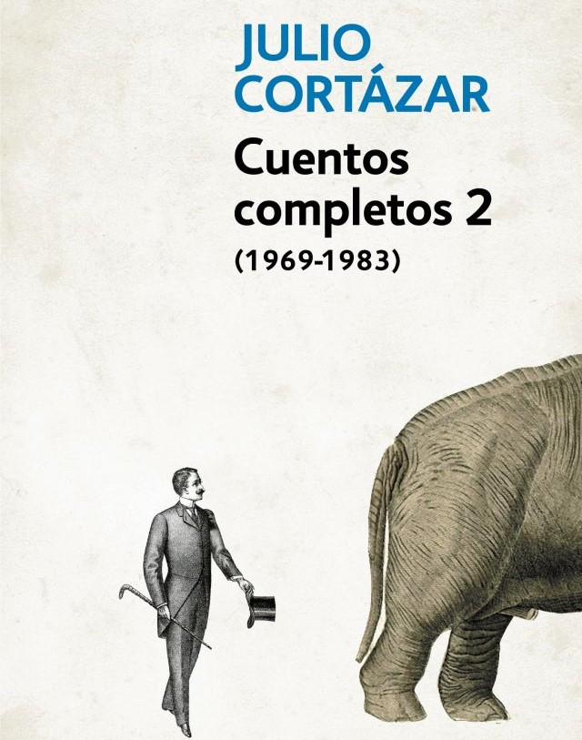

- 

- 


¿Quiénes somos?
Somos un emprendimiento, creado en 2023 con el objetivo de
promover la literatura y su lectura en todas sus formas y a diferentes tipos de lectores.
Creemos que todos somos lectores y escritores de nuestros propios recorridos.
Contamos con libros de índole nacionales e internacionales
de diversos autores y autoras como Dolores Reyes, Selva Almada,
Julio Cortázar, Mariana Enriquez, Franz Kafka, H. P. Lovecraft,entre otros.
Creemos en la magia de los libros y en su poder para inspirar, educar y entretener.
Nuestro compromiso es proporcionarte un espacio donde puedas explorar mundos nuevos,
descubrir historias cautivadoras y nutrir tu amor por la lectura.
Vamos a ayudarte para encontrar el libro perfecto, ya sea que estés buscando una novela emocionante,
un libro de no ficción informativo, literatura infantil o cualquier otro género que te interese.
También ofrecemos recomendaciones personalizadas y eventos literarios para conectar a los amantes de los libros.
Trabajamos con autores locales y organizamos clubes de lectura, presentaciones de libros y otros eventos
culturales para fomentar el amor por la lectura en nuestra área.
Explorá nuestras estanterías y déjate llevar por el mundo de las letras.
Ya sea que busques un regalo especial, una nueva aventura o simplemente un rincón para sumergirte
en un buen libro.